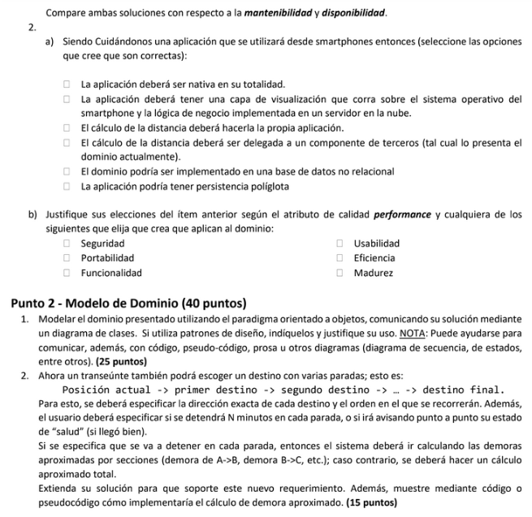
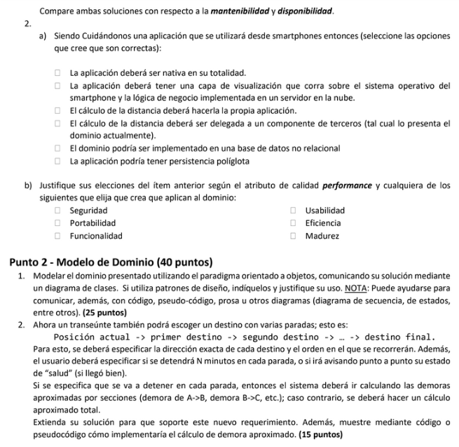
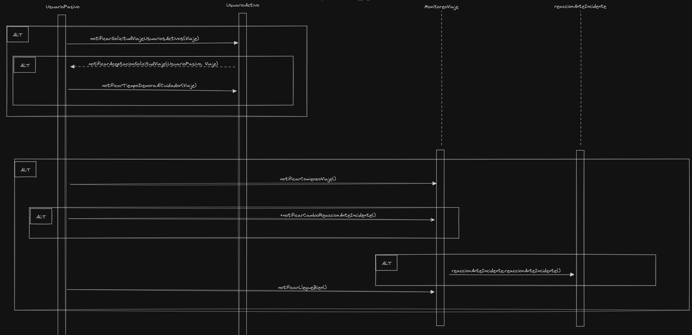
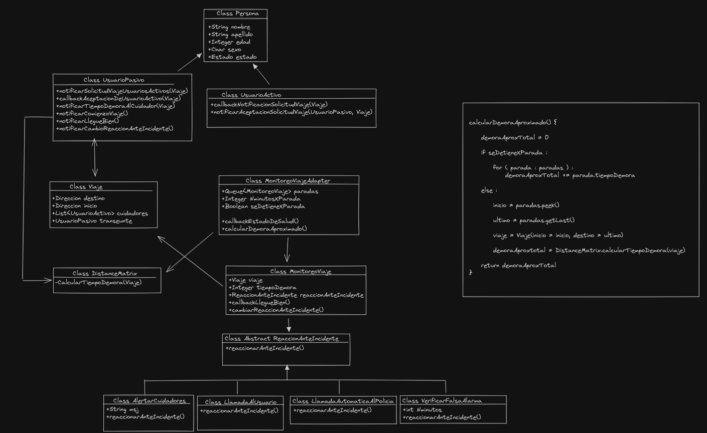

DS TP: Cuidandonos
Enunciado
 

Resolucion
Pundo 1
En la alternativa Cola de mensajes, la implementación se hará mediante Firebase el cual debido a usar herramientas externas no podremos tener todo el control total, en este caso debemos mantener el codigo adaptandonos a Firebase y a los cambios que este mismo presente en un futuro. Firebase está respaldado por la infraestructura de Google, lo que garantiza una alta disponibilidad. En la alternativa Proceso propio, , se necesita desarrollar y mantener un proceso propio para hacer llamadas REST al servidor central. Esto implica más trabajo de desarrollo y posiblemente más mantenimiento a largo plazo. La disponibilidad del proceso propio depende de la implementación y de la infraestructura del servidor central al que hace llamadas REST. Si el servidor central experimenta problemas de disponibilidad, el proceso propio también se verá afectado.

Al proporcionar una capa de visualizacion de software ayuda al usuario a entenderlo, aprenderlo, usarlo de una forma atractiva aumentando la usabilidad. La lógica de negocio implementada en un servidor en la nube aumenta la seguridad. Delegar el calculo de la distancia a un componente de terceros asegura cumplir con la funcionalidad
Pundo 2
Resolucion a
Diagrama de Clases

Diagrama de Secuencia

Resolucion b
